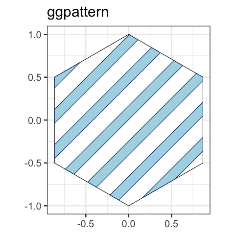

| ggpattern {ggpattern} | R Documentation |

Provides 'ggplot2' geoms filled with various patterns. Includes a patterned version of every 'ggplot2' geom that has a region that can be filled with a pattern. Provides a suite of 'ggplot2' aesthetics and scales for controlling pattern appearances. Supports over a dozen builtin patterns (every pattern implemented by 'gridpattern') as well as allowing custom user-defined patterns.
The following ggpattern options may be set globally via base::options():
Set custom “array” pattern functions.
Set custom “geometry” pattern functions.
Set new default raster resolution default (pixels per inch)
for the pattern_res aesthetic.
If TRUE use the grid clipping path feature introduced in R v4.1.0
else do a rasterGrob approximation of the clipped pattern.
If TRUE sets the default for all the other
ggpattern_use_R4.1_* options arguments to TRUE.
If TRUE use the grid gradient feature introduced in R v4.1.0
else do a rasterGrob approximation of the gradient pattern.
If TRUE use the grid mask feature introduced in R v4.1.0.
else do a rasterGrob approximation of the masked pattern.
If TRUE use the grid pattern feature introduced in R v4.1.0.
Available for use in writing custom patterns.
Note to use the R v4.1.0 features one needs R be (at least) version 4.1 and not all graphic devices support any/all these features. See https://www.stat.auckland.ac.nz/~paul/Reports/GraphicsEngine/definitions/definitions.html for more information on the R v4.1.0 grid features.
Maintainer: Trevor L. Davis trevor.l.davis@gmail.com (ORCID)
Authors:
Mike FC
ggplot2 authors
Useful links:
Report bugs at https://github.com/trevorld/ggpattern/issues